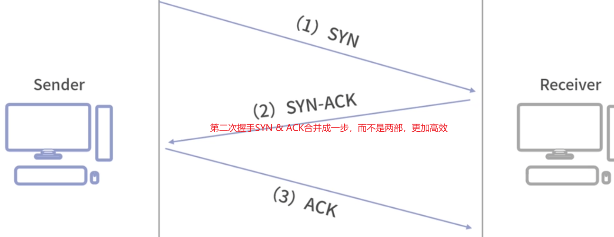
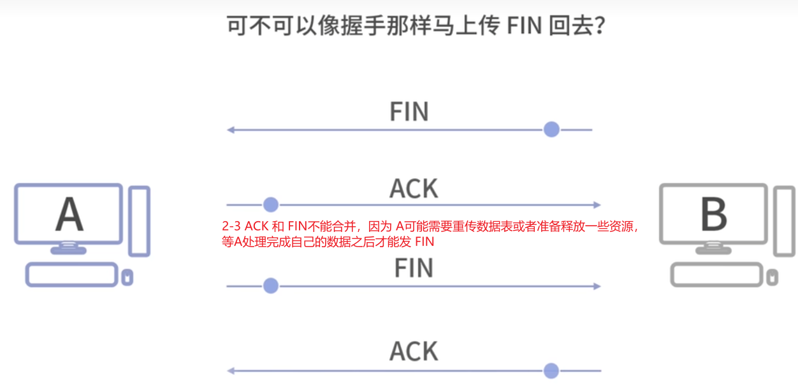
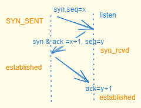
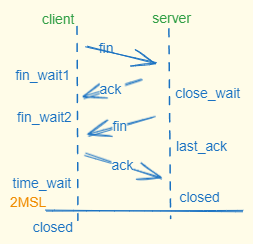
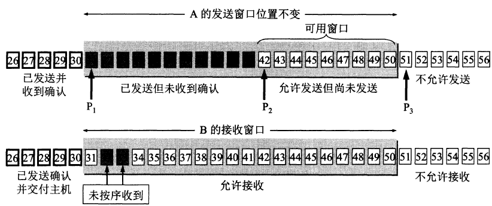
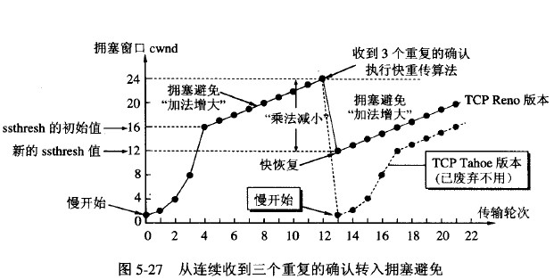

计算机网络_TCP专题
 次阅读
次阅读
文章目录
TCP 有哪些定时器
如果TCP连接的双方都没有向对方发送数据，则在两个TCP模块之间不交换任何信息。
如果一个给定的连接在两个小时之内没有任何动作，则服务器就向客户发送一个探查报文段。。客户主机必须处于以下 4个状态之一。
\1) 客户主机依然正常运行，并从服务器可达。客户的 TCP响应正常，而服务器也知道对方是正常工作的。服务器在两小时以后将保活定时器复位。如果在两个小时定时器到时间之前有应用程序的通信量通过此连接，则定时器在交换数据后的未来2小时再复位。
\2) 客户主机已经崩溃，并且关闭或者正在重新启动。在任何一种情况下，客户的TCP都没有响应。服务器将不能够收到对探查的响应，并在75秒后超时。服务器总共发送 10个这样的探查，每个间隔75秒。如果服务器没有收到一个响应，它就认为客户主机已经关闭并终止连接。
\3) 客户主机崩溃并已经重新启动。这时服务器将收到一个对其保活探查的响应，但是这个响应是一个复位，使得服务器终止这个连接。
\4) 客户主机正常运行，但是从服务器不可达。这与状态 2相同，因为TCP不能够区分状态4与状态2之间的区别，它所能发现的就是没有收到探查的响应。
在第1种情况下，服务器的应用程序没有感觉到保活探查的发生。 TCP层负责一切。这个过程对应用程序都是透明的，直至第 2、3或4种情况发生。在这三种情况下，服务器应用程序将收到来自它的TCP的差错报告
对每个连接，TCP管理4个不同的定时器：
- 重传定时器使用于当希望收到另一端的确认。
- 坚持(persist)定时器使窗口大小信息保持不断流动，即使另一端关闭了其接收窗口。
- 保活( keepalive )定时器可检测到一个空闲连接的另一端何时崩溃或重启。这个定时器。
- 2MSL定时器测量一个连接处于TIME_WAIT状态的时间。
坚持定时器
我们已经知道TCP通过让接收方指明希望从发送方接收的数据字节数（即窗口大小）来进行流量控制。如果窗口大小为 0会发生什么情况呢？这将有效地阻止发送方传送数据，直到窗口变为非0为止。接收端窗口变为非0后，就会发送一个确认ACK指明需要的报文段序号以及窗口大小。
如果这个确认ACK丢失了，则双方就有可能因为等待对方而使连接终止：接收方等待接收数据（因为它已经向发送方通告了一个非0的窗口），而发送方在等待允许它继续发送数据的窗口更新。为防止这种死锁情况的发生，发送方使用一个坚持定时器 (persist timer)来周期性地向接收方查询，以便发现窗口是否已增大。这些从发送方发出的报文段称为窗口探查 (window probe)。
FIN_WAIT_2定时器(FIN_WAIT_2 timer)
主动关闭的一端调用完close以后（即发FIN给被动关闭的一端， 并且收到其对FIN的确认ACK）则进入FIN_WAIT_2状态。如果这个时候因为网络突然断掉、被动关闭的一段宕机等原因，导致主动关闭的一端不能收到被动关闭的一端发来的FIN，主动关闭的一段总不能一直傻等着，占着资源不撒手吧？这个时候就需要FIN_WAIT_2定时器出马了， 如果在该定时器超时的时候，还是没收到被动关闭一端发来的FIN，那么不好意思， 不等了， 直接释放这个链接。FIN_WAIT_2定时器的时间可以从/proc/sys/net/ipv4/tcp_fin_timeout中查看和设置。
————————————————
版权声明：本文为CSDN博主「hyman_yx」的原创文章，遵循CC 4.0 BY-SA版权协议，转载请附上原文出处链接及本声明。
原文链接：
https://blog.csdn.net/hyman_yx/article/details/52086389
MSS 往返时间计算公式
首先TCP必须测量在发送一个带有特别序号的字节和接收到包含该字节的确认之间的RT T。最初的TCP规范使TCP使用低通过滤器来更新一个被平滑的RTT估计器：

Karn算法：当一个超时和重传发生时，在重传数据的确认最后到达之前，不能更新RTT估计器，因为我们并不知道ACK对应哪次传输。
TCP 协议的基本操作
- Host主动向另一个Host发起连接，称为 SYN (Synchroniation) ,请求同步
- 一个Host主动断开请求，称为 FIN( finish),请求完成
- 一个Host给另一个发数据，成为 PSH (push) ，数据推送
接受方收到数据，会回复一个ACK表示恢复

四次挥手不能像三次握手那样，中间合并操作

总结
- TCP提供链接 (Connection) ，让传输更加稳定
- tcp没有提供会话，因为对话的需求多种多样， 比如 http session 就是一种会话，会话是 应用层定义的一种概念上的东西， 比如电商会话 会保持购物车、订单一致性，这需要应用层封装和实现
其他
[[计算机网络八股文.md]]
[[..\计算机网络\tcpip\tcpip-basics.md]]
[[..\计算机网络\tcpip\http-code.md]]
[[..\计算机网络\tcpip\http-basics.md]]
[[..\计算机网络\tcpip\tcp-udp.md]]
[[..\笔试题，面经挂经\计算机网络\tcp理解题.md]]
[[..\计算机网络\网络协议_.md]]
https://www.nowcoder.com/discuss/498415804963102720?sourceSSR=search
其他问题扩展
为什么要三次握手，而不是两次握手
假如 Server端没有第三部 接受ACK, 而是 发送 ACK 第二部的时候就开始进入 ESTABLISHED
状态，这个连接状态是没法保证的 ，有可能client端根本没有收到server的 SYN


client为什么 time_wait 要等 2MSL?
保证A发送的最后一个ACK报文段能够到达B。
这个ACK报文段有可能丢失，B收不到这个确认报文，就会超时重传连接释放报文段，然后A可以在2MSL时间内收到这个重传的连接释放报文段，接着A重传一次确认，重新启动2MSL计时器，最后A和B都进入到CLOSED状态，若A在TIME-WAIT状态不等待一段时间，而是发送完ACK报文段后立即释放连接，则无法收到B重传的连接释放报文段，所以不会再发送一次确认报文段，B就无法正常进入到CLOSED状态。
简单的来说，就是确认 server端已经收到了 ACK，如果 Srv没收到 ack，就会一直重传 FIN
最后导致 server端 一直在 last_ack状态，无法进入 closed状态
四次握手中 第二步和第三步是不能合并的 ， 只有等到Server端所有的报文都发送完了，这时Server端才能发送连接释放报文，之后两边才会真正的断开连接。故需要四次挥手。
TCP的粘包和拆包
TCP是面向流，没有界限的一串数据
TCP底层并不了解上层业务数据的具体含义，它会根据TCP缓冲区的实际情况进行包的划分，所以在业务上认为，一个完整的包可能会被TCP拆分成多个包进行发送，也有可能把多个小的包封装成一个大的数据包发送，这就是所谓的TCP粘包和拆包问题。
为什么会产生粘包和拆包呢?
- 要发送的数据小于TCP发送缓冲区的大小，TCP将多次写入缓冲区的数据一次发送出去，将会发生粘包；
- 接收数据端的应用层没有及时读取接收缓冲区中的数据，将发生粘包；
- 要发送的数据大于TCP发送缓冲区剩余空间大小，将会发生拆包；
- 待发送数据大于MSS（最大报文长度），TCP在传输前将进行拆包。即TCP报文长度-TCP头部长度>MSS。
解决方案：
- 发送端将每个数据包封装为固定长度
- 在数据尾部增加特殊字符进行分割
- 将数据分为两部分，一部分是头部，一部分是内容体；其中头部结构大小固定，且有一个字段声明内容体的大小。
http协议是如何解决tcp拆包和粘包的？
HTTP协议在解决TCP拆包和粘包问题上，主要是依赖于其报文格式的设计。具体来说，HTTP的请求和响应报文，包括请求行、请求头、响应行、响应头，都可以通过CRLF（回车换行，即\r\n）作为流的边界进行读取。
在HTTP中，每个请求或响应都以CRLF结尾，这意味着无论TCP如何拆包或粘包，只要按照CRLF的标记来切割，就可以正确地将HTTP的请求和响应分割开来。
此外，HTTP协议还通过Content-Length和Transfer-Encoding等头部字段来进一步处理拆包和粘包问题。如果Content-Length头部字段存在，那么接收端就可以根据这个长度来读取数据，从而避免拆包问题。而如果Transfer-Encoding头部字段被设置为chunked，那么数据就会被分块传输，每个块前面都会附带一个表示块长度的数字，这样接收端就能根据这个长度逐个读取完整的块，解决了粘包问题。
综上所述，HTTP协议通过其特定的报文格式和头部字段的设计，有效地解决了TCP拆包和粘包的问题。
总结：
- conent-length 长度确定边界
- \r\n 来分割数据
两点保证
TCP和UDP的区别？
TCP面向连接；UDP是无连接的，即发送数据之前不需要建立连接。
TCP提供可靠的服务；UDP不保证可靠交付。
TCP面向字节流，把数据看成一连串无结构的字节流；UDP是面向报文的。
TCP有拥塞控制；UDP没有拥塞控制，因此网络出现拥塞不会使源主机的发送速率降低（对实时应用很有用，如实时视频会议等）。
每一条TCP连接只能是点到点的；UDP支持一对一、一对多、多对一和多对多的通信方式。
TCP首部开销20字节；UDP的首部开销小，只有8个字节。
TCP 和 UDP 分别对应的常见应用层协议有哪些？
基于TCP的应用层协议有：HTTP、FTP、SMTP、TELNET、SSH
HTTP：HyperText Transfer Protocol（超文本传输协议），默认端口80
FTP: File Transfer Protocol (文件传输协议), 默认端口(20用于传输数据，21用于传输控制信息)
SMTP: Simple Mail Transfer Protocol (简单邮件传输协议) ,默认端口25
TELNET: Teletype over the Network (网络电传), 默认端口23
SSH：Secure Shell（安全外壳协议），默认端口 22
基于UDP的应用层协议：DNS、TFTP、SNMP
DNS : Domain Name Service (域名服务),默认端口 53
TFTP: Trivial File Transfer Protocol (简单文件传输协议)，默认端口69
SNMP：Simple Network Management Protocol（简单网络管理协议），通过UDP端口161接收，只有Trap信息采用UDP端口162。
说说TCP是如何确保可靠性的呢？
- 首先，TCP的连接是基于三次握手，而断开则是基于四次挥手。确保连接和断开的可靠性。
- 其次，TCP的可靠性，还体现在有状态;TCP会记录哪些数据发送了，哪些数据被接收了，哪些没有被接受，并且保证数据包按序到达，保证数据传输不出差错。
- 再次，TCP的可靠性，还体现在可控制。它有数据包校验、ACK应答、超时重传(发送方)、失序数据重传（接收方）、丢弃重复数据、流量控制（滑动窗口）和拥塞控制等机制。
流量控制和拥塞控制区别？
TCP的流量控制和拥塞控制是两个不同的概念，主要区别在于它们控制的对象和目标不同。
- 流量控制：流量控制主要是为了解决发送方和接收方之间因速度不同步而可能导致的数据丢失问题。当发送方发送数据的速度过快时，接收方可能无法及时接收，从而导致数据丢失。流量控制通过滑动窗口机制来实现，即接收方通过设置窗口大小来告诉发送方当前它能接收的最大数据量。这样，发送方就可以根据接收方的窗口大小来调整发送数据的速度，确保数据能够及时、可靠地传输到接收方。
- 拥塞控制：拥塞控制主要是为了解决因过多的数据注入到网络中导致的数据包丢失和网络拥塞问题。当发送方发送的数据量过大时，可能会导致网络拥塞，从而引发数据包丢失。为了解决这个问题，TCP采用了拥塞控制机制。拥塞控制通过拥塞窗口来控制发送方的数据流量，以避免网络拥塞的发生。拥塞控制包括慢启动、拥塞避免、快速重传和快速恢复四个阶段，通过这四个阶段的控制，可以有效地避免网络拥塞的发生，提高网络的利用率和数据的传输效率。
综上所述，流量控制主要关注的是发送方和接收方之间的数据传输速率匹配问题，而拥塞控制则关注的是整个网络的数据流量控制问题，以避免网络拥塞的发生。
说下TCP的滑动窗口机制 (流量控制)
TCP 利用滑动窗口实现流量控制。流量控制是为了控制发送方发送速率，保证接收方来得及接收。 TCP会话的双方都各自维护一个发送窗口和一个接收窗口。接收窗口大小取决于应用、系统、硬件的限制。发送窗口则取决于对端通告的接收窗口。接收方发送的确认报文中的window字段可以用来控制发送方窗口大小，从而影响发送方的发送速率。将接收方的确认报文window字段设置为 0，则发送方不能发送数据。

TCP（传输控制协议）提供了几种流量控制的方法，以确保数据在网络中的可靠传输。以下是其中几种常用的方法：
- 滑动窗口机制：TCP中的滑动窗口机制允许发送方在不等待确认的情况下连续发送多个数据包。接收方会发送一个窗口大小的确认信息，告诉发送方可以继续发送多少个数据包。通过动态调整滑动窗口的大小，可以有效控制数据的发送速度。
- 慢启动和拥塞避免：在TCP建立连接之后，发送方会采用慢启动算法逐渐增加发送窗口的大小，以便测试网络的拥塞程度。如果检测到拥塞，发送方会减小窗口大小，并减慢发送速率，以避免网络拥塞。
N- agle算法：TCP的数据传输分为交互数据流和成块数据流，交互数据流一般是一些交互式应用程序的命令，所以这些数据很小，而考虑到TCP报头和IP报头的总和就有40字节，如果数据量很小的话，那么网络的利用效率就较低。数据传输使用Nagle算法，Nagle算法很简单，就是规定一个TCP连接最多只能有一个未被确认的未完成的小分组。在该分组的确认到达之前不能发送其他的小分组。
此外，TCP还有一些其他的方法来实现流量控制，如TCP窗口缩放选项和TCP时间戳选项等。这些方法可以进一步提高网络的吞吐量和可靠性。
详细讲一下拥塞控制？

慢开始
把拥塞窗口 cwnd 设置为一个最大报文段MSS的数值。而在每收到一个对新的报文段的确认后，把拥塞窗口增加至多一个MSS的数值。每经过一个传输轮次，拥塞窗口 cwnd 就加倍。 为了防止拥塞窗口cwnd增长过大引起网络拥塞，还需要设置一个慢开始门限ssthresh状态变量。
当 cwnd < ssthresh 时，使用慢开始算法。
当 cwnd > ssthresh 时，停止使用慢开始算法而改用拥塞避免算法。
当 cwnd = ssthresh 时，既可使用慢开始算法，也可使用拥塞控制避免算法。
拥塞避免
让拥塞窗口cwnd缓慢地增大，每经过一个往返时间RTT就把发送方的拥塞窗口cwnd加1，而不是加倍。这样拥塞窗口cwnd按线性规律缓慢增长。
无论在慢开始阶段还是在拥塞避免阶段，只要发送方判断网络出现拥塞（其根据就是没有收到确认），就要把慢开始门限ssthresh设置为出现拥塞时的发送 方窗口值的一半（但不能小于2）。然后把拥塞窗口cwnd重新设置为1，执行慢开始算法。这样做的目的就是要迅速减少主机发送到网络中的分组数，使得发生 拥塞的路由器有足够时间把队列中积压的分组处理完毕。
快重传
有时个别报文段会在网络中丢失，但实际上网络并未发生拥塞。如果发送方迟迟收不到确认，就会产生超时，就会误认为网络发生了拥塞。这就导致发送方错误地启动慢开始，把拥塞窗口cwnd又设置为1，因而降低了传输效率。
快重传算法可以避免这个问题。快重传算法首先要求接收方每收到一个失序的报文段后就立即发出重复确认，使发送方及早知道有报文段没有到达对方。
发送方只要一连收到三个重复确认就应当立即重传对方尚未收到的报文段，而不必继续等待重传计时器到期。由于发送方尽早重传未被确认的报文段，因此采用快重传后可以使整个网络吞吐量提高约20%。
快恢复
当发送方连续收到三个重复确认，就会把慢开始门限ssthresh减半，接着把cwnd值设置为慢开始门限ssthresh减半后的数值，然后开始执行拥塞避免算法，使拥塞窗口缓慢地线性增大。
在采用快恢复算法时，慢开始算法只是在TCP连接建立时和网络出现超时时才使用。 采用这样的拥塞控制方法使得TCP的性能有明显的改进。
tcp超市重传时间如何计算 (RTO)
TCP超市重传时间（RTO）的计算取决于以下几个因素：
-
发送方窗口大小（cwnd）：发送方窗口是发送方已经准备好的数据量，它反映了发送方接收到的数据量。发送方会根据收到的 acknowledgment 更新这个窗口大小。当收到的 acknowledgment 数量大于等于 cwnd 时，发送方会继续发送数据，直到窗口大小为 0。
-
重传 timeout 间隔（RTO）：当发送方无法收到 acknowledgment 时，它会启动重传机制。重传 timeout 间隔表示在等待下一个 acknowledgment 的过程中，发送方最多等待这么长时间。这个间隔通常基于发送方窗口大小的值，即 cwnd 乘以一个常数，例如 2 或 3。
-
重传once 的最小间隔（RTT）：重传once 表示在等待第一个 acknowledgment 的过程中，发送方最多等待这么长时间。这个间隔通常基于重传 timeout 间隔的值，即 RTO 乘以一个常数，例如 4 或 5。
-
网络状态（loss rate）：网络状态表示数据在网络上传输过程中失败的比例。网络状态会影响重传机制的效率，因为它会决定是否需要更多的重试次数。
根据这些因素，RTO 的计算公式通常如下：
RTO = cwnd 2 (或 3)
RTT = RTO (4 或 5)
发送方会根据这些计算出的 RTO 和 RTT 来决定是否需要启动重传机制，以及重传机制的执行策略。例如，当收不到 acknowledgment 时，发送方会启动重传机制，并等待 RTT 的时间，然后再次发送数据。
如何判断网络端口是否能连接
|
|
文章作者 LYR
上次更新 2021-08-17